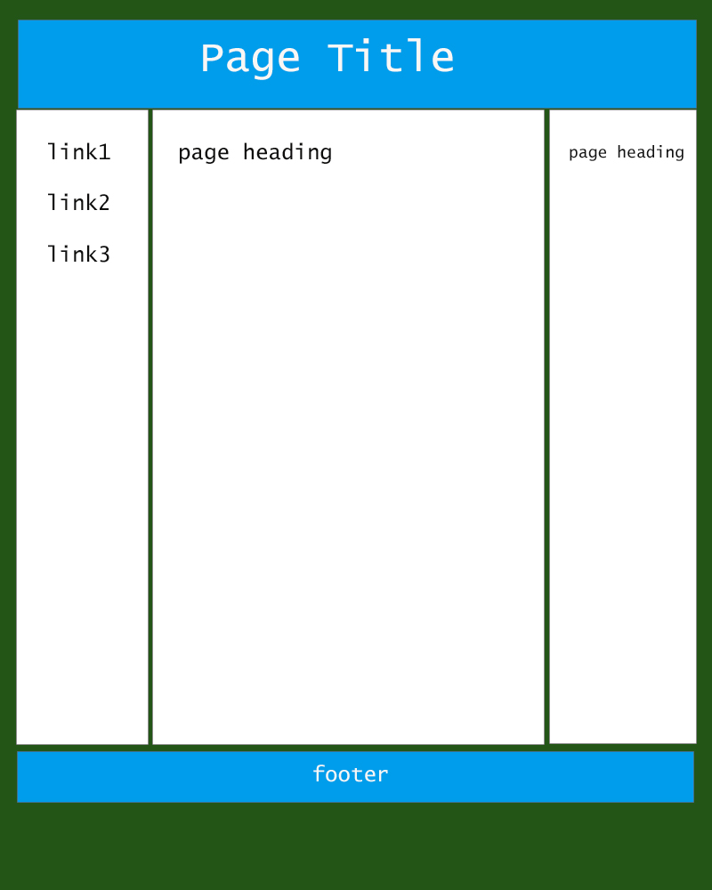

The following are 6 CSS box model webpage layouts.
- You need to pick one layout as your webpage design template to build your web site.
- The topic of your website can be anything that are age appropriate for your peers.
Click on a layout to see examples of finished webpages for that layout and skills needed.

Basic Layout 2

Medium Layout 1

Medium Layout 2

Advanced Layout 1

Advanced Layout 2